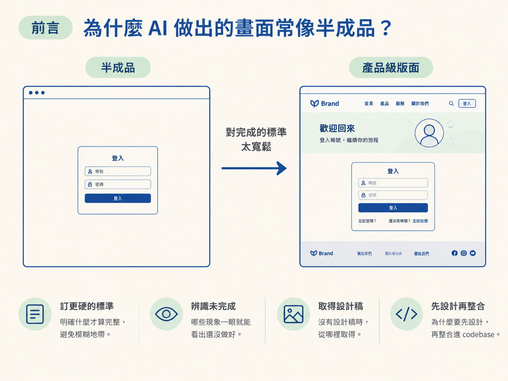
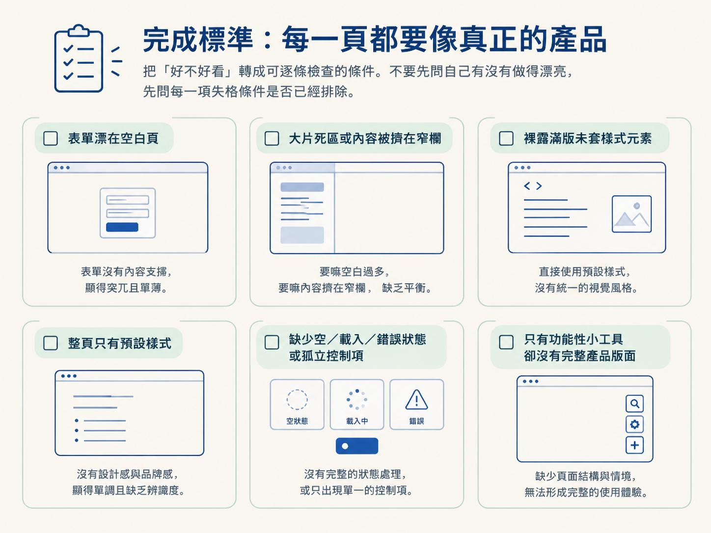
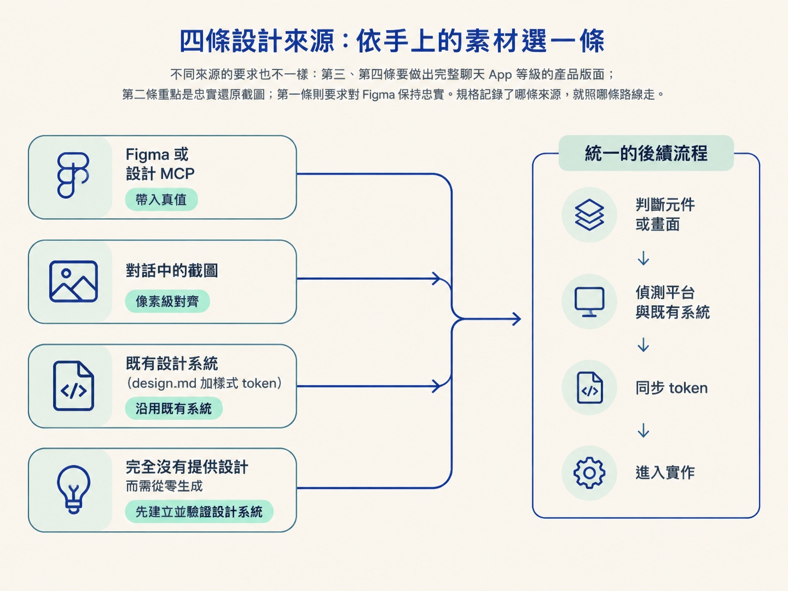
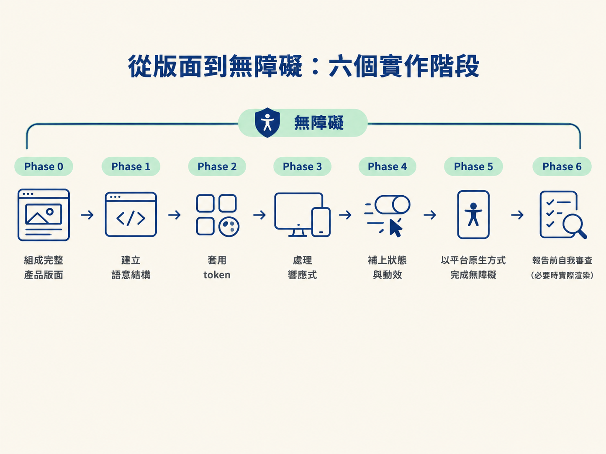
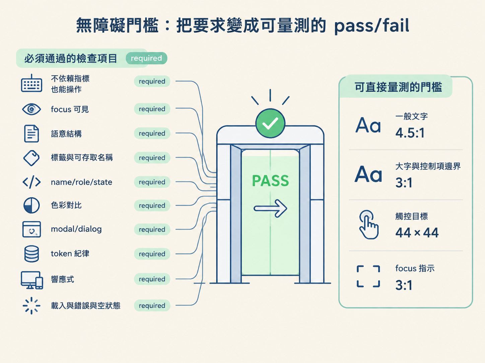

完成這一節後，你應該能說明 UI 的完成標準與失格條件，依手上的設計來源選擇正確路線，並用「設計先行、整合其次」的兩趟流程，做出符合規格的元件或完整頁面。
請 AI 做一個登入頁，它很容易交出置中的表單、兩個輸入框和一顆按鈕。功能也許能用，但整個畫面漂在空白裡，看起來更像還沒交作業的草稿，而不是可以出貨的產品。
問題通常不是 AI 不會寫 CSS，而是它把「完成」想得太寬鬆。UI 軌要做的事，就是把完成標準訂得夠硬：什麼才算完整、哪些現象一眼就代表尚未完成、設計稿不存在時該從哪裡取得設計，以及為什麼要先設計、再整合進 codebase。

UI 軌的核心標準很直接：每一個頁面離開時，都必須是一個完整、專業的產品版面。品質應該接近頂尖產品，或你對 Claude 自己的聊天介面所期待的程度，而不是勉強能操作的空殼。
這不是「有空再調整的視覺樣式」，而是 UI 建置本身的定義。以下六種情況只要命中一項，就還不能算完成；在報告前必須先修掉：
這份清單的好處，是把「好不好看」這種容易爭論的問題，轉成可以逐條檢查的條件。不要先問自己有沒有做得漂亮，先問每一項失格條件是否已經排除。

為什麼不能一開始就邊看 codebase、邊受既有 token、函式庫和限制牽制？因為設計還沒成形，就可能先被現有實作壓扁。
因此 UI 軌固定分成兩趟：
| 趟次 | 做什麼 | 心態 |
|---|---|---|
| 第一趟：設計版面 | 把頁面當成要獨立出貨的產品，大膽、完整、有主張地組出來，並對齊談好的設計系統。 | 先讓好設計存在 |
| 第二趟：整合進 codebase | 套用已安裝的樣式函式庫、真實 token、語意化 HTML、無障礙規則與響應式行為。 | 再讓設計真的住進專案 |
報告之前還有一個不可省略的步驟：先自己審一遍。拿完成標準、失格清單，以及該頁 design.md 的建置指令，逐條檢查實作。任何踩中的項目都要先修正。
如果手邊有瀏覽器或截圖工具，就真的把頁面渲染出來看。像「一條莫名其妙的黑條」這類視覺問題，光讀程式碼很難可靠發現。自己審查時也不要只確認功能有沒有跑，還要確認渲染後的版面是否完整，並在報告中說明檢查過哪些內容。
設計來源是一次性的決策，通常早已記錄在規格中。不要重複追問，也不要因為某個 MCP 恰好連著，就自動把 Figma 當成來源。依照手上已有的素材，選擇對應的檔案與路線。
| 你手上的東西 | 來源路線 | 關鍵行為 |
|---|---|---|
| 規格指定 Figma 或某個設計 MCP | ui/mcp.md | 把真實設計中的 token、間距、元件、具名 frame 與素材帶進 design.md，使用真值。MCP 未連線時要明確說明，請使用者連線或改選其他來源，不能默默改用生成的設計。 |
| 貼在對話中的截圖，不是 repo 檔案 | ui/image.md | 忠實複製並盡量像素級對齊。截圖同時提供外觀與構圖，因此照圖實作，不要自行加戲；將看得見的內容 token 化，再補上截圖看不出的響應式與無障礙行為。 |
已經有設計系統：design.md 加上樣式中的 token | ui/existing.md | 在既有系統裡設計新頁面，讓它和已出貨的頁面一致。方向讀 design.md，token 的實際值讀樣式系統；兩者分開管理，不要重複。 |
| 完全沒有提供設計 | ui/generate.md | 先建立設計系統，再開始蓋頁面。找出一個方向，推導並驗證 token，包含計算對比，最後把 token 寫進 CSS，並將設計性格記錄在 design.md。 |
四條路線最後都會匯流到同一組流程：先判斷是元件還是畫面，接著偵測平台與既有系統，再同步 token，最後進入實作階段。
不同來源的要求也不一樣：第三、第四條要做出完整聊天 App 等級的產品版面；第二條重點是忠實還原截圖；第一條則要求對 Figma 保持忠實。規格記錄了哪條來源，就照哪條路線走。

這個判斷會影響 props 契約、路由整合方式，以及檔案應該放在哪裡。
| 提示詞包含 | 建置型別 |
|---|---|
| screen、page、layout、route、dashboard、view | 畫面 |
| component、button、card、input、modal、badge、dropdown、toggle、chip | 元件 |
| 看不出來 | 只問一次：「這是可重用元件，還是完整頁面？」 |
元件要先定義 props 契約，再開始寫標記。匯出方式要遵循這個 codebase 的慣例；元件內不能 import 導航，也不能負責畫面層級的資料抓取。如果專案有元件工作台，例如 stories 或 previews，也要在旁邊補上對應檔案。
畫面則必須接入平台的 router 或 navigator。畫面層要處理載入、錯誤與空狀態；如果專案已經有 layout 或 shell 元件，也要把畫面包進既有結構。
動手前先讀專案目前使用的技術與組織方式。不要把自己的偏好硬套進去，因為同一個 UI 在不同平台上，導航、版面原語、字體和圖片處理方式都可能不同。
至少要偵測以下五件事：
design.md。如果某一項尚未安裝，就選擇該平台當代慣用的最佳解，並在報告裡記錄這個選擇。不要在這裡把某個產品名稱寫死成通則。
不論採用哪條設計來源，最後都會收斂到以下階段。無障礙不是最後才貼上的標籤，而是從版面開始就一路跟著實作。

| 階段 | 做什麼 |
|---|---|
| Phase 0 | 依照畫面類型，例如驗證、儀表板、列表、詳情、著陸頁或設定，組成完整的產品版面。 |
| Phase 1 | 建立語意結構，使用正確的語意標籤，而不是把所有內容都塞進 div。 |
| Phase 2 | 套用 token。既然系統已有 token，就不要用原始字面值重複表達相同內容。 |
| Phase 3 | 處理響應式版面。 |
| Phase 4 | 補上狀態與動效。 |
| Phase 5 | 用平台原生的方式完成無障礙支援。 |
| Phase 6 | 報告前先自己審一遍，必要時實際渲染查看。 |
字體也有一個容易踩到的限制：如果設計指定專有字體，不能直接抓來使用。要使用替代字體對照表，並處理字體載入。
素材同樣要先在專案中尋找。找不到時就詢問，或使用佔位服務、本機漸層佔位；不論採用哪一種，都要集中管理，之後才能替換。
無障礙清單是一道 pass/fail 閘門。要檢查的類別包括：不依賴指標也能操作、focus 可見、語意結構、標籤與可存取名稱、name／role／state、色彩對比、modal 與 dialog、token 紀律、響應式，以及載入、錯誤與空狀態。
標記為 required 的項目全部通過，這個 skill 才算完成。當中有幾項可以直接量測：

| 項目 | 門檻 |
|---|---|
| 一般文字的色彩對比 | 4.5:1 |
| 大字與控制項邊界的對比 | 3:1 |
| 觸控目標尺寸 | 44×44 |
| focus 指示的對比 | 3:1 |
還要記住 token 紀律：不要直接使用原始字面值。如果需要的 token 尚不存在，就寫成 // TODO: missing token: …。不要自行發明一個值塞進去，否則下一位維護者可能會以為那個硬編碼值是刻意設計的。
UI 軌是來服務專案的 build approach，不是自己指定一套策略。
在 Facade 模式中，通常會先做 UI 殼、使用佔位資料，再接上真正的後端；但這只是四種策略之一，不是所有專案的通則。端到端或 tracer bullet 切片，會在同一趟實作中把資料層落地，因此 UI 會直接綁定真實來源。Journey 則是把一條使用者路徑完整走完。
不論採用哪一種 approach，前面的實作階段都仍然適用。真正改變的，只有「真實資料在什麼時候進來」。
UI 軌的完成標準很硬：每個頁面都要是一個完整、專業的產品版面，並逐條通過六項失格檢查。流程固定分兩趟：先大膽完成整個設計，再整合進 codebase 的樣式函式庫、真實 token、語意 HTML、無障礙與響應式系統。報告前要自己審查，能渲染就實際渲染。設計來源有四條：Figma MCP、貼上的截圖、既有設計系統，以及從零生成；當來源是「什麼都沒有」時，要先建立並驗證設計系統。開始前先判斷是元件還是畫面，再偵測平台的框架、樣式、導航、亮暗主題與圖示系統，沿用專案慣例。實作會收斂到 Phase 0 到 6，無障礙貫穿全程，並有可量測的門檻：一般文字 4.5:1、大字與邊界 3:1、觸控目標 44×44、focus 3:1。token 缺少時標記 TODO，不要硬編一個值。
這一節的交付結果很具體：你應該能依規格選定設計來源，判斷要做元件還是畫面，完成一個可渲染、可檢查、符合平台慣例的產品級 UI。下一節會轉到另一條軌：當工作內容是 API、服務、資料層或整合時，Logical 軌的七個階段如何運作。